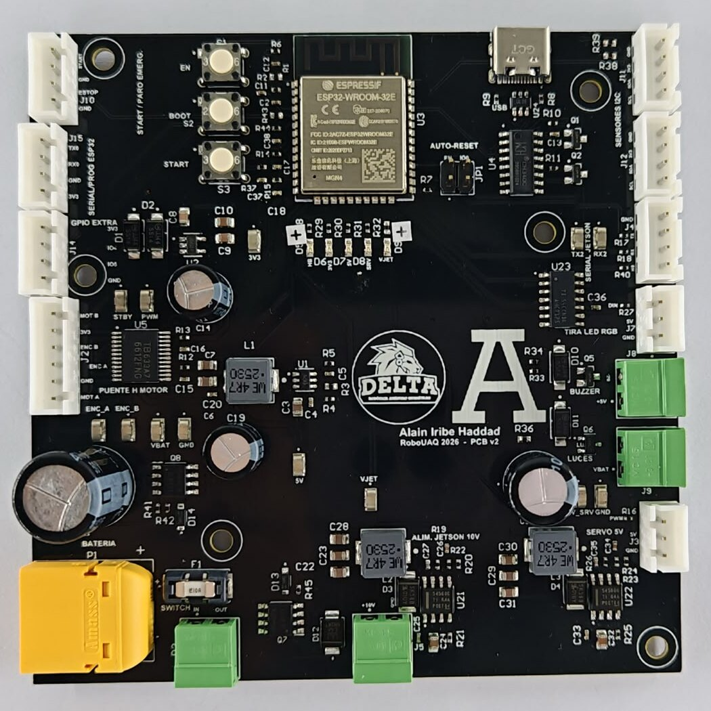

Manual de la PCB Autonomo_V2
Esta placa es el puente entre la batería, la computadora del carro y las piezas que se mueven. Recibe la batería, la reparte en los voltajes que pide cada cosa y mueve el motor y la dirección con las órdenes que manda la Jetson.
El manual está pensado para que alguien que nunca ha visto la placa pueda conectarla, entender qué hace cada parte y agregarle cosas. Si vas a otra competencia con reglas distintas, aquí ves qué se puede quitar o poner.
Placa
Foto real con puntos que puedes tocar. Cada punto te dice qué es esa pieza y cómo se usa.
Lo que ya lleva
Batería, motor, servo y Jetson. Qué modelo usamos y cómo se conecta cada uno.
Qué agregar
Sensores I2C, pantalla, buzzer, luces, tira LED, interruptor y paro. Modelo, conexión y código.
Energía
Por dónde pasa la corriente, cuánto aguanta cada riel y qué LED lo indica.
Cambios
Modificaciones que sí se pueden hacer: más sensores, otro voltaje de servo, fusible, programar sin jumpers.
Compras y problemas
Lista para comprar con lo que ya tienes marcado, y qué revisar cuando algo no funciona.
En un minuto
| Dato | Valor |
|---|---|
| Tamaño | 100 × 100 mm, 4 capas, todo el montaje arriba |
| Batería | LiPo 3S (11.1 V nominal, 12.6 V llena) por XT60, fusible de 10 A |
| Microcontrolador | ESP32-WROOM-32E con WiFi y Bluetooth |
| Voltajes que salen | 10 V para la Jetson · 5.2 V para el servo · 5 V lógica · 3.3 V del ESP32 |
| Motor | Un motor DC con encoder, con driver TB6612FNG |
| Seguridad | Paro de emergencia por hardware, protección de polaridad, TVS contra picos |
| Programación | USB-C (chip CH340C) o el conector J15 |
Antes de cada competencia
Cada concurso tiene sus propias reglas sobre sensores y botones. Revisa estas tres cosas antes de armar:
- Qué sensores dejan usar. En RoboUAQ 2026, por ejemplo, solo se permiten sensores de visión. Ahí la IMU y el sensor de distancia se quedan fuera, aunque sirven para pruebas.
- Cómo se arranca. RoboUAQ pide encender con un solo botón de inicio. Para eso está START (J10 o el botón S3 de la placa).
- Si piden paro de emergencia visible. El paro va en J10 y corta el motor sin depender del programa.
Todo lo que agregues por I2C, J14, J8, J9 o J7 se desconecta sin tocar la placa. Así puedes armar una versión por competencia.
La placa, pieza por pieza
Toca un punto de la foto. Los azules son conectores, los naranjas son de energía, los rojos son de seguridad y los dorados son chips y botones. La foto la tomó el ensamblador, con la placa en la misma orientación que la serigrafía: XT60 abajo a la izquierda y USB arriba.

Lo que ya lleva el carro
Estas son las piezas con las que se diseñó la placa. Si cambias alguna, revisa la columna de límites.
Batería LiPo 3S
11.1 V nominal y 12.6 V llena. Entra por el XT60 marcado BATERIA.
Límite: el fusible es de 10 A. La placa aguanta hasta unos 15 V; por eso no uses 4S.
Ojo: con la batería baja (cerca de 10.5 V) la Jetson ya no recibe sus 10 V completos y puede reiniciarse. Carga y balancea antes de correr.
Motor GM25-370 con encoder
Un solo motor de tracción con encoder de cuadratura (360 pulsos por vuelta). La versión es de 24 V, pero con la batería de 11 V se mueve bien.
Límite: el driver TB6612FNG da 1.2 A continuos y 3.2 A de pico por canal. Aquí van los dos canales juntos, así que aguanta unos 2.4 A continuos. Un motor más grande necesita otro driver.
Si gira al revés: cambia de lugar MOT_A y MOT_B en el cable o invierte el signo en el firmware.
Servo MG995 (dirección Ackermann)
Recibe 5.2 V de un regulador solo para él. Así sus picos no reinician al ESP32.
Calibración del carro: 1100 µs izquierda, 1360 µs centro, 1730 µs derecha. Señal en GPIO25, pasa por un buffer a 5 V.
Límite: el regulador da hasta 5 A. El MG995 pide 2.5 a 3 A de pico.
Jetson Orin Nano
Es la computadora que ve con las cámaras y decide. Las cámaras y el control de Xbox se conectan a la Jetson, no a esta placa.
Energía (J5): 10 V al jack de la Jetson. El kit de desarrollo acepta de 9 a 20 V. Usa un plug de barril igual al del eliminador original.
Datos (J4): UART entre ESP32 y Jetson.
Mensajes: la Jetson manda V<vel>,S<dir> y el ESP32 contesta v<vel>,s<dir>.
Computadora para programar
El USB alimenta solo al ESP32. Sirve para cargar firmware y ver el monitor serie a 115200.
Motor, servo y Jetson necesitan la batería. Puedes tener USB y batería conectados al mismo tiempo.
Firmware de prueba
Hay un programa con menú que prueba todo: LED, voltajes, START y paro, motor, servo, buzzer, luces, tira, UART, escaneo I2C y J14.
Está en el repositorio, carpeta firmware/prueba-pcb. Úsalo siempre que conectes algo nuevo.
Qué le puedes agregar
Cada tarjeta dice qué te aporta, qué modelo comprar, cómo se conecta y el código mínimo. Las etiquetas indican si lo recomiendo para todos los carros o solo para algunas competencias.
Cómo se reparte la energía
Sigue el camino de arriba abajo. Cada caja dice qué pieza hace el trabajo y cuánto aguanta.
Cuánto le puedes colgar a cada riel
| Riel | Ya lo usan | Margen para extras |
|---|---|---|
| 3.3 V (600 mA) | ESP32 (hasta ~250 mA con WiFi), encoder, CH340 | Unos 200 mA. Alcanza para IMU, OLED y un ToF juntos. |
| 5 V (5 A) | Entrada del 3.3 V, buffer | Tira LED y buzzer. Con 16 LEDs a brillo medio vas sobrado. |
| 5.2 V servo (5 A) | Servo | Solo el servo. No le cuelgues nada más. |
| 10 V (5 A) | Jetson (hasta ~25 W) | Solo la Jetson. |
| VBAT | Todo lo anterior y el motor | Luces en J9: hasta ~1 A. |
LEDs indicadores
| LED | Encendido quiere decir | Si está apagado |
|---|---|---|
| HB | Lo controla el programa (GPIO2). El firmware de prueba lo hace parpadear. | El programa no está corriendo o no usa el LED. |
| 3V3 | Hay 3.3 V | Revisa 5 V o el USB. |
| 5V | Hay 5 V de lógica | Revisa batería, P2 y fusible. |
| SRV | Hay voltaje para el servo | Revisa batería o un corto en J3. |
| VJET | Hay 10 V para la Jetson | Revisa batería o un corto en J5. |
Medir la batería desde el programa
El ESP32 lee la batería por un divisor en GPIO36. La lectura en volts se multiplica por 5.545.
float vbat = analogReadMilliVolts(36) / 1000.0 * 5.545;
if (vbat < 10.8) digitalWrite(13, HIGH); // buzzer: batería bajaCambios que se le pueden hacer
Van de lo más fácil (solo cables) a lo que pide soldar. Lo que es de cables lo puedes cambiar entre competencias.
1. Poner más de dos sensores I2C
J11 y J12 son el mismo bus. Puedes colgar varios módulos siempre que cada uno tenga una dirección distinta. Para pasar de dos conectores a más, usa módulos que traigan dos conectores (uno de entrada y uno de salida) o haz un cable en "Y".
| Módulo | Dirección |
|---|---|
| OLED SSD1306 | 0x3C (algunos 0x3D) |
| ToF VL53L0X / VL53L1X | 0x29 (los dos) |
| IMU BNO085 | 0x4A o 0x4B |
| IMU MPU-6050 | 0x68 o 0x69 |
| IMU ICM-20948 | 0x68 o 0x69 |
| Medidor de corriente INA219 | 0x40 a 0x4F |
Dos sensores iguales: si pones dos VL53L1X, los dos nacen en 0x29. Conecta el pin XSHUT de uno a IO4 o IO5 (J14), apágalo, cambia la dirección del otro y luego préndelo. Esto se repite cada vez que arranca.
Cables: menos de 30 cm. La placa ya trae resistencias pull-up de 4.7 kΩ. Si cuelgas más de tres módulos que también traen las suyas y empiezan los errores, quita las de algún módulo.
Para saber qué quedó conectado, usa la opción b del firmware de prueba (escaneo I2C).
2. Cambiar el buzzer, las luces o la tira por otra competencia
Los tres van en conectores aparte. Se quitan sin tocar nada. Si no los usas, el programa solo deja esos pines apagados.
La tira LED puede cumplir el papel de luces si una competencia pide faros o direccionales. Puedes poner un pedazo al frente y otro atrás en el mismo cable: la tira se encadena.
3. Programar sin los jumpers de JP1
Con los dos jumpers puestos en JP1, el IDE resetea y programa solo. Sin ellos, la Jetson no puede reiniciar el ESP32 por accidente al abrir el puerto, que era una falla de la versión anterior.
Sin jumpers: mantén BOOT (S2), presiona y suelta EN (S1), suelta BOOT y luego carga el programa. Para competir, quita los jumpers.
4. Cambiar el fusible
F1 es un portafusible OMNI-BLOK con un fusible NANO2 de 10 A, rápido, serie 451. El fusible sale con pinzas y se cambia sin soldar.
Puedes poner uno más chico, por ejemplo 7.5 A, si quieres que proteja antes. No pongas uno más grande que 10 A.
5. Subir el servo a 6 V (avanzado, hay que soldar)
El regulador del servo da 0.8 × (1 + R23 / R24). Hoy R23 = 54.9 kΩ y R24 = 10 kΩ, que da 5.2 V. Con R23 = 64.9 kΩ da 6.0 V. A 6 V un servo suele ganar fuerza y velocidad.
Solo hazlo si tu servo aguanta 6 V (revisa su hoja). Son resistencias 0402, así que pide ayuda con la soldadura si no tienes práctica. C21 es de 16 V, así que no hay que cambiarlo.
6. Usar otro motor
El TB6612FNG aguanta 1.2 A continuos y 3.2 A de pico por canal, con el motor hasta 15 V. Aquí los dos canales van juntos.
Si el motor nuevo pide más corriente al arrancar (busca la "stall current" en su hoja), necesitas un driver externo. Puedes manejarlo con los mismos pines de J2 sacando PWM y dirección por J14.
7. Usar el Bluetooth o el WiFi del ESP32
El ESP32 trae los dos. Sirven para ver datos en el celular (voltaje, velocidad, modo) sin cables, o para un control de pruebas.
Ojo: con WiFi o Bluetooth encendidos, el ADC2 deja de funcionar. En esta placa eso solo afecta a IO4 si lo quisieras usar como entrada analógica. La batería y el paro se leen por ADC1, así que no les pasa nada.
8. Lo que no conviene cambiar
- Batería de 4S o más: rebasa lo que aguantan el driver del motor y el regulador de 5 V.
- Conectar algo más al riel del servo o de la Jetson.
- Cargas grandes en el 3.3 V (más de 200 mA extra).
- Quitar el paro de emergencia con un puente fijo para competir.
Lista de compras
Marca lo que ya tienes. Se guarda en este navegador. Los botones abren la búsqueda con el modelo exacto en Mercado Libre y Amazon. En tiendas del centro (AMMA, +Electrónica) pide el mismo número de modelo.
| Qué | Modelo | Para qué | Buscar |
|---|
Necesario = para que la placa funcione en el carro. Recomendado = vale la pena en casi cualquier competencia. Opcional = según reglas y lo que quieras mostrar.
Cuando algo no funciona
Empieza siempre por los LEDs de la placa. Te dicen qué riel falta.
No prende ningún LED
- ¿Hay interruptor o puente en P2? Sin eso no pasa corriente.
- ¿La batería está cargada? Mide en el XT60.
- ¿El fusible F1 está bien? Mide continuidad entre sus extremos.
- ¿La batería quedó al revés? Q7 bloquea y no prende nada. Voltéala.
Prenden los LEDs pero el motor no gira
- El paro está abierto. Revisa que el botón no esté presionado o pon un puente entre J10 pin 3 y pin 4 para probar.
- El programa debe poner STBY (GPIO19) en alto.
- Prueba con la opción 4 del firmware de prueba, con las ruedas al aire.
La Jetson o el ESP32 se reinician
- Batería baja. Por debajo de unos 10.5 V la Jetson ya no recibe 10 V.
- El servo se traba contra el tope y jala mucha corriente. Ajusta los límites de 1100 y 1730 µs.
- Si el ESP32 se reinicia al abrir el puerto desde la Jetson, quita los jumpers de JP1.
No puedo programar el ESP32
- Instala el driver del CH340 en la computadora.
- Sin jumpers en JP1 hay que entrar a modo programación a mano: BOOT presionado, toque a EN, soltar BOOT.
- Prueba otro cable USB-C. Muchos solo cargan y no pasan datos.
El sensor I2C no aparece
- Revisa el orden de pines del cable contra la tarjeta del módulo.
- Corre el escaneo I2C (opción b del firmware de prueba).
- En el código usa
Wire.begin(32, 33). Los pines I2C de esta placa no son los de siempre (21 y 22). - Dos módulos con la misma dirección chocan. Revisa la tabla de direcciones.
La tira LED hace colores raros o no prende
- Revisa que el cable llegue a la entrada (DIN) de la tira, no a la salida. La flecha de la tira apunta hacia afuera.
- Prueba
NEO_GRBoNEO_RGBsegún tu tira. - Baja el brillo con
setBrightness.
Quiero medir con multímetro
La placa tiene puntos de prueba (TP1 a TP13) junto a los rieles y señales. Pon la punta negra en cualquier GND (el tornillo de la bornera J5 pin 2, por ejemplo) y la roja en el punto. Compara con lo esperado: 3.3, 5.0, ~5.2 y ~10 V.
Fuentes de datos de componentes: hojas de datos de TI (TPS565201), Toshiba (TB6612FNG), Littelfuse (154 OMNI-BLOK), CEVA (BNO085), ST (VL53L1X), Espressif (ESP32) y NVIDIA (Jetson Orin Nano). Valores de la placa sacados del archivo de Altium.